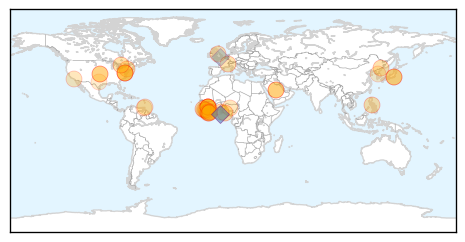
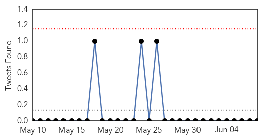

Ebola
30-Day Web Trend
0 alerts, 0 warnings

30-Day Twitter Trend
0 alerts, 0 warnings

Article Locations
Article Confidences

Top Articles:
- 1.000
- Fourth patient dies of MERS in South Korea
- 1.000
- Philippine News
- 0.995
- Ebola outbreak thrusts MSF into new roles
- 0.994
- Twitter users share four billion Ebola messages in a week
- 0.994
- Guinea Extends Ebola Emergency Measures Until the End of June
- 0.993
- MERS cases in South Korea rise to 87, with six deaths
- 0.993
- Preventing the next global pandemic
- 0.988
- The Salvation Army in Canada Ebola Crisis Team Continues Work in West Africa
- 0.976
- Volta NDC kicks against Ebola vaccine trial in Hohoe
- 0.973
- Can Statins Help Treat Ebola?
- 0.967
- NDC says no to "needless" Ebola vaccines trial in V/R
- 0.964
- MERS temporarily not threat to China: expert - Xinhua
- 0.960
- G7 warned world remains unprepared for pandemics
- 0.954
- Experts agree to develop robust blood transfusion services in Ebola affected and unaffected countries - Sierra Leone
- 0.942
- UNMEER Chief Thanks President Mahama For Extraordinary Leadership And Solidarity
- 0.927
- MERS cases in Columbia rise to 87, with six deaths
- 0.920
- Grand Bassa Midwife - Nurses Trainer
- 0.919
- Liberia/Guinea Hold 2nd Cross-Border Ebola Surveillance Meeting Coordinated by Global Communities
- 0.909
- ‘’THE THREAT OF ANOTHER OUTBREAK FROM A VACCINE PREVENTABLE DISEASE IS REAL’’ HEALTH MINISTER WARNS!
- 0.886
- Back From Ebola to Teach the Next Generation
- 0.866
- World Health Experts Ask G7 Countries to Create Infection Rapid Response Unit
- 0.859
- Sierra Leone News: ‘Sierra Leone in dire need of medical specialists’-Dr. Gooding « Awoko Newspaper
- 0.827
- donga.com[English donga]
- 0.808
- Liberia prepares for border surveillance
- 0.804
- Jenner media circus fueled by cash, not rights
- 0.803
- Beyond Ebola: Laying the foundation for Caribbean regional health security
- 0.793
- Amb. Zhao commends Journalists for ebola fight « Awoko Newspaper
- 0.790
- Three Nightmare Health Threats and How to Wake Up
- 0.782
- There Will Now Be An Actual Public Health Class On FX's 'The Strain'
- 0.780
- Zuriel Oduwole interviews her 15th world leader, President Alpha Conde of Guinea
- 0.759
- US to Invest US$57.2M in Health Sector
- 0.736
- Strengthening human resources for health systems resilience to care for mothers and children
- 0.696
- Pres. Sirleaf congratulates Sweden
- 0.660
- No reports of MERS in N.K. yet
- 0.629
- Beyond Ebola, laying foundations for Caribbean regional health security
- 0.622
- Sierra Leone journalists at daggers drawn over Ebola money
- 0.601
- The Doctor Who Contracted Ebola Is Feeling Fine -- NYMag
- 0.584
- Hallan cadáver por inundaciones en Texas y cifra de fallecidos aumenta a 23
- 0.542
- Sierra Leone News: SLAJ Kenema meet …Salone media contributes $1m to ebola fight-SLAJ Prexy « Awoko Newspaper
Top Tweets:
- 0.955
- Ebola Update: 27189 confirmed probable & suspected cases reported in 3 most affected countries with 11149 deaths. EbolaResponse
- 0.842
- In this outbreak Ebola spread quicker than time available for addressing beliefs. Many communities changed only once affected.
- 0.821
- Health system strengthening needed to build resilient health systems that can respond and react to outbreaks such as Ebola G7Summit
- 0.761
- G7 underwhelms with Ebola response - Politico http://t.co/hxDCBE2gZm ebola EVD
- 0.752
- Minnesota man helps fight Ebola in West Africa - Post-Bulletin http://t.co/o1uWLZlagP ebola EVD
- 0.585
- As of 31 May 1880 contacts associated with confirmed Ebola cases were under follow-up in Guinea. EbolaResponse is not over yet.
- 0.543
- .@WHO publishes Ebola diaries with accounts from Ebola first responders http://t.co/GBCGHJXRap
- 0.534
- Sophie Countess of Wessex meets Army nurse Anna Cross cured of Ebola - Daily Mail http://t.co/wpGF9aAIyq ebola EVD
- 0.532
- Here's the Difference Between MERS and Ebola - TIME http://t.co/um2JFY3EIs ebola EVD
- 0.532
- From today's Situation Report -> 12 new Ebola cases in SierraLeone last week https://t.co/HNZNNlWxk8 EbolaResponse
- 0.511
- G7 states vow to wipe out Ebola but offer little concrete action - Reuters http://t.co/znhnnNJ0zP ebola EVD
Influenza
30-Day Web Trend
0 alerts, 0 warnings

30-Day Twitter Trend
0 alerts, 0 warnings

Article Locations

Article Confidences

Top Articles:
- 0.998
- (Yonhap Interview) Trust, responsibility vital for MERS control: WHO chief
- 0.998
- (Yonhap Interview) Trust, responsibility vital for MERS control
- 0.991
- MERS deadly but most cases in hospital preventable, WHO says
- 0.987
- Viruses on a plane! How flu travels around the world
- 0.956
- New vaccines effective against H5N1, H7N9 avian influenza strains
- 0.780
- Training course on laboratory preparedness for emerging respiratory pathogens
- 0.751
- June 7, 2015 Archives
- 0.751
- June 7, 2015 Archives
- 0.682
- Five More Confirmed US Bird Flu Outbreaks
- 0.628
- Minnesota researchers race to decode secrets of deadly bird flu
- 0.592
- Bird flu cases appear to be dropping as clean up continues
Top Tweets:
-
No tweets found for Jun 08, 2015